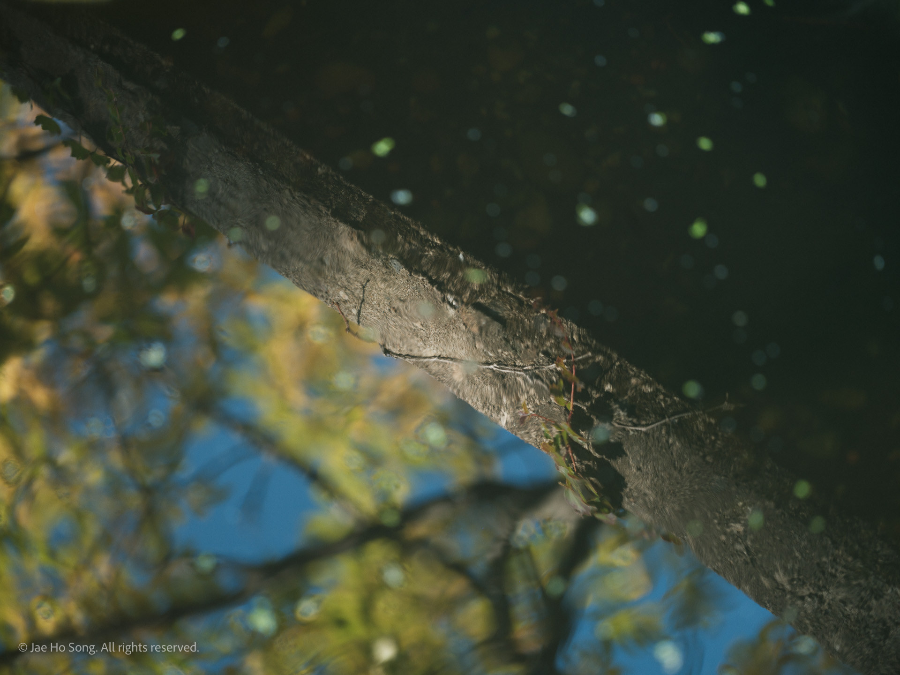
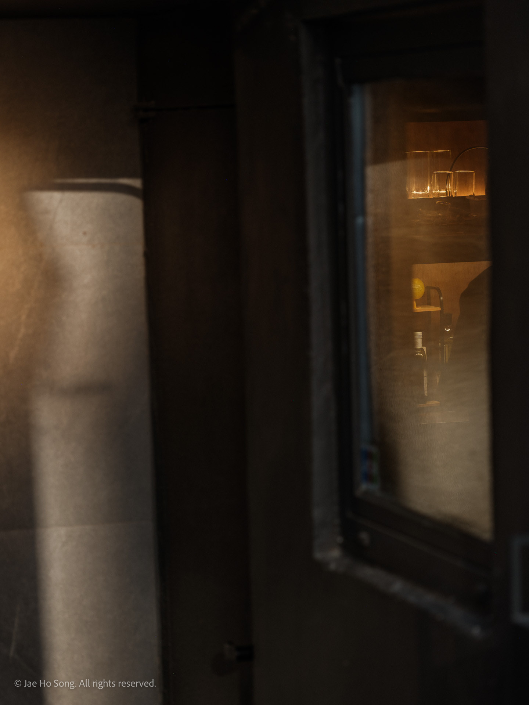
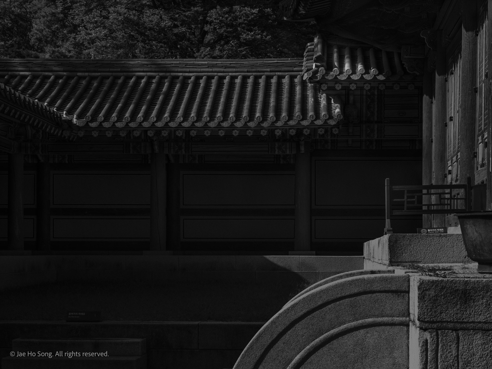
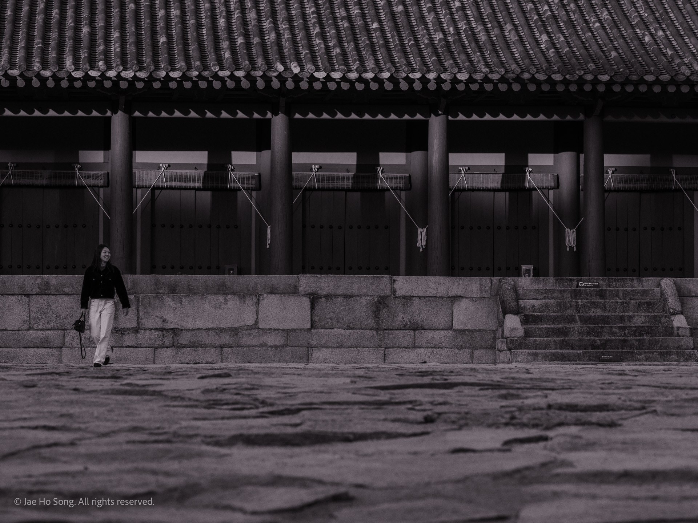

Afterglow
2026
저물어 가는 빛, 다가오는 어둠의 그림자, 그 사이에 스며 있는 잔광. 그 찰나의 경계 속에서 형체는 고요하고도 아련한 매력으로 제 모습을 드러낸다.
The fading light, the shadow of coming darkness, and the soft glow blending between them. In that passing moment, forms reveal themselves with a tranquil and subtle charm.



